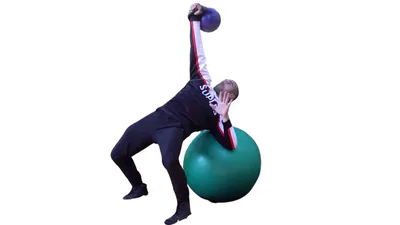

B664 · Like a bench press, but WAY more athletic...KB Swiss Ball Drop & Recover!
Hi {first_name},
It's no surprise that bodybuilders aren’t the best at athletic movement. Neither are most powerlifters.
Both of them certainly do have high levels of muscle and strength, but typical training styles don’t usually prioritize essential athletic qualities:
To me, the most beautiful displays of athleticism do so through expressing strength in conjunction with rhythm, timing and fluidity.
When I see a gymnast for example, my brain goes "DAMN! That person moves athletically and with such grace!"
Today’s video covers the Kettlebell Bottoms-Up Drop & Recover, which I first learned from my mentor, Paul Chek, to help balance my body out from competing in Kettlebell Sport.

Also, respond to this email if you’d like to see more on the swiss ball ; )
Keep training intentionally and have a fantastic rest of your week, Mike Salemi
P.S. Did you know I'm offering a FREE Kettlebell Progressions workshop happening on February 1st? Click here to sign up.
*If you cannot attend the live workshop at 5:00pmPST, all participants do get a viewing link available for 72 hours) |